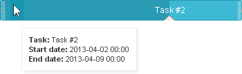
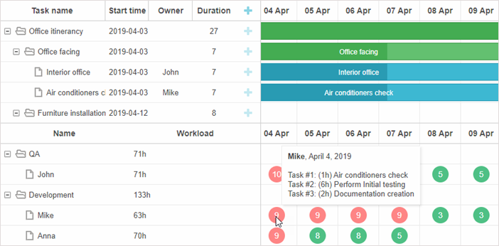

Tooltips allow you to add extra information for users without overflowing the screen with text. By default, tooltips are added to Gantt tasks.

You can add tooltips to any Gantt element via the corresponding API.
To activate tooltips for tasks, enable the tooltip plugin using the gantt.plugins method:
<script>
gantt.plugins({ tooltip: true });
gantt.init("gantt_here");
</script>
Once the extension is activated, tooltips will be automatically displayed with the default settings.
By default, tooltips display 3 properties of a task:
To set a custom text for tooltips, use the tooltip_text template:
gantt.templates.tooltip_text = function(start,end,task){
return "<b>Task:</b> "+task.text+"<br/><b>Duration:</b> " + task.duration;
};
You can access the object of tooltip as gantt.ext.tooltips.tooltip. This object allows manipulating the position, content and visibility of tooltip via a set of methods:
There are several methods that allow controlling behavior of the tooltip while hovering over DOM elements.
adds tooltip with extended configuration. The method takes an object with tooltip settings as a parameter. The settings that can be adjusted via the method are the following:
adds a tooltip for the specified Gantt element. It is a more simplified version of the attach() method. The method takes as a parameter an object with tooltip details. This object has the following properties:
removes tooltip. As a parameter the method takes:
By default, tooltips are added just to the Gantt tasks, but you can also set tooltips for any other Gantt element. For example, for a resource marker:

There are two corresponding methods in the tooltip API for this purpose:
For example, this is how you can add tooltips for cells of the timeline scale:
var domHelper = gantt.utils.dom;
var pos = domHelper .getRelativeEventPosition(event, gantt.$task_scale);
return gantt.templates.task_date(gantt.dateFromPos(pos.x));
Related sample: Custom Tooltips
A tooltip added in this way will follow the mouse pointer and use the settings tooltip_offset_x, tooltip_offset_y, tooltip_timeout, tooltip_hide_timeout.
This method allows adding a tooltip with an extended configuration to adjust tooltip behavior to the movement of the mouse pointer.
There is a possibility to modify the default behavior of tooltip. It can be achieved by removing the default tooltip handler and adding a custom one:
// remove the built-in tooltip handler from tasks
gantt.ext.tooltips.detach("["+gantt.config.task_attribute+"]:not(.gantt_task_row)");
gantt.ext.tooltips.tooltipFor({
selector: ".gantt_grid ["+gantt.config.task_attribute+"]",
html: (event: MouseEvent) => {
if (gantt.config.touch && !gantt.config.touch_tooltip) {
return;
}
const targetTaskId = gantt.locate(event);
if(gantt.isTaskExists(targetTaskId)){
const task = gantt.getTask(targetTaskId);
return gantt.templates.tooltip_text(task.start_date, task.end_date, task);
}
return null;
},
global: false
});
You can configure the time of tooltips showing and hiding via the related settings.
To specify the time period in milliseconds before a tooltip for a task will appear, use the tooltip_timeout:
gantt.config.tooltip_timeout = 50;
gantt.init("gantt_here");
To define how long (in milliseconds) a tooltip will be shown after the user moves the cursor to another position, use the tooltip_hide_timeout property:
gantt.config.tooltip_hide_timeout = 5000;
gantt.init("gantt_here");
The position of a tooltip can be configured by changing offsets of its default position via the two configuration properties:
gantt.config.tooltip_offset_x = 30;
gantt.config.tooltip_offset_y = 40;
gantt.init("gantt_here");
Before version 6.1 tooltips have been displayed only inside the timeline area. After v6.1 release tooltips displaying isn't limited, and a tooltip follows the movement of the mouse pointer.
If necessary, you can restore the previous behavior by using the code below before initialization of Gantt:
gantt.attachEvent("onGanttReady", function(){
var tooltips = gantt.ext.tooltips;
tooltips.tooltip.setViewport(gantt.$task_data);
});
gantt.init("gantt_here");
gantt.parse(demo_tasks);